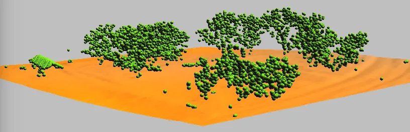
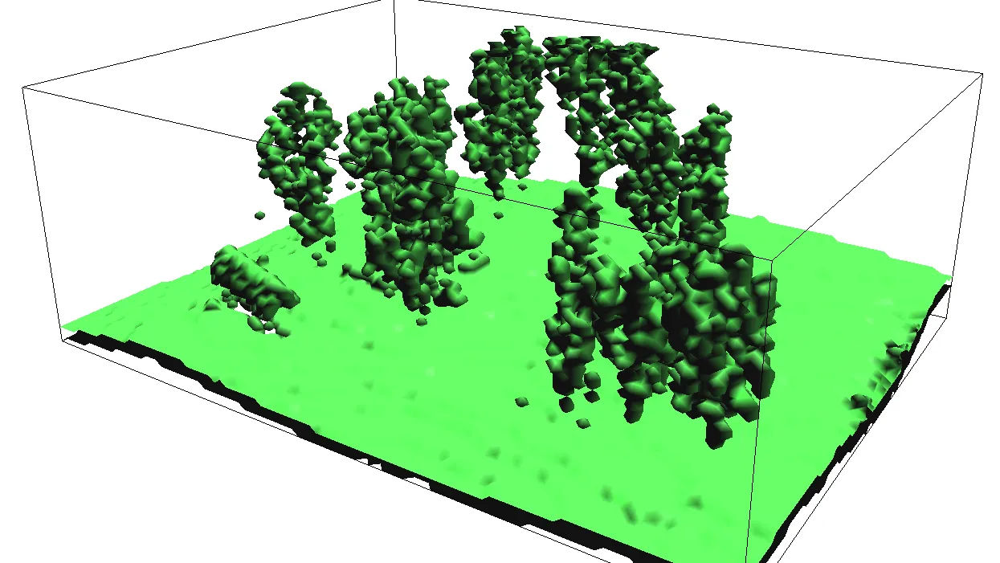
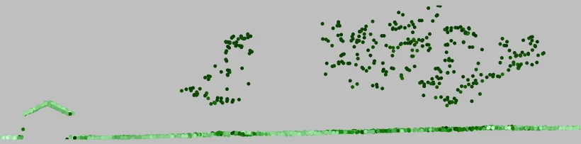

Assignment 4A - Analysis
Analyzing and Visualizing surfaces from multiple return lidar data
Outline
- Analyze and import lidar point cloud for Mid Pines area
- Compute bare earth and canopy surfaces and derived parameters
- Employ topographic analysis techniques to highlight subtle terrain features
- Explore voxel model based analysis of multiple return point cloud (optional)
Data
- Lake Wheeler data set (formatted as GRASS location): Lake_Wheeler_NCspm (you should already have it from previous assignments)
- 2013 lidar point cloud for Midpines
- 2015 UAS sample point cloud for Midpines sub-area, derived by SfM
- ASPRS LAS specification file with the list of ASPRS Standard LIDAR Point Classes on p.10
Software
In the assignment we will be using GRASS GIS 8.4 or higher, libLAS (included in GRASS GIS package for MS Windows and Ubuntu), and a web-based point cloud viewer plas.io (might not work with older browsers, most functionality is available in Chrome). Please refer to the Course logistics webpage for links to software in case you don’t have it installed already.
Quick data exploration in web browser
First view the downloaded lidar and UAS las files “mid_pines_spm_2013.las” and “2015_06_sample_points_NCsmp.las” in your web browser using plas.io. Try out different settings and tools.
GIS-based analysis of point clouds
Launch GRASS GIS with the Lake_Wheeler_ncspm location. Create a new mapset for this assignment.
Change the current working directory to the directory where you downloaded the LAS files using cd command and path or in case you work in command line in GRASS GUI just type cd and press enter and select the directory using a dialog.
cd ~/DownloadsLet’s first look at the lidar point cloud metadata, particularly at the classes, we will later work with the classes 1 and 2.
Windows:
lasinfo mid_pines_spm_2013.lasLinux/Mac
pdal info mid_pines_spm_2013.lasThe output shows number of points in each class:
Point Classifications
---------------------------------------------------------
1340658 Unclassified (1)
2580704 Ground (2)
66 Low Point (noise) (7)
1960603 Reserved for ASPRS Definition (11) Class 11 - for the explanation of Categories in this class refer to p. 10 in ASPRS LAS specification file. In this particular case, the classification scheme was not used - the metadata define class 11 as “withheld”.
Get the geographic extent of the point cloud and then set the computational region to tis extent:
r.in.lidar -sgo input=mid_pines_spm_2013.las
g.region n=220218 s=218694 e=637795 w=636271 -pExplore the density of points
Lidar point cloud
First we set the resolution to 1 meter (flag -a ensures region boundaries are adjusted to be even multiples of the resolution value):
g.region res=1 -paCompute the density of all points using binning:
r.in.lidar -o input=mid_pines_spm_2013.las output=mid_pines_dens_all method=n
d.rast mid_pines_dens_all
d.legend -f -s -d rast=mid_pines_dens_all at=5,50,7,10
d.out.file mid_pines_dens_all.pngCompute the density of ground points and set histogram equalized color table for both densities so that we can compare them:
r.in.lidar -o input=mid_pines_spm_2013.las output=mid_pines_dens_ground class_filter=2 method=n
r.colors -e map=mid_pines_dens_all,mid_pines_dens_ground color=bcyr
d.rast mid_pines_dens_groundCompare both rasters and save as images for report.
Later, we will examine the density using v.outlier and imported vector points.
Lidar point cloud: raster binning and classification
Compute different surfaces by binning. Explore what different returns and classes show.
Create a raster map of classes:
- 1 - ground
- 2 - vegetation
- 3 - buildings
Create DSM:
g.region n=220218 s=218694 e=637795 w=636271 res=2 -pa
r.in.lidar -o input=mid_pines_spm_2013.las output=mid_pines_all_max method=max resolution=3 class_filter=1,2Create surface based on last return
Last return with r.in.lidar represents canopy because it filters last return where there are multiple returns.
In general, last return represents the overall last return from the lidar pulse an is commonly used to identify ground.
r.in.lidar -o input=mid_pines_spm_2013.las output=mid_pines_last_mean method=mean return_filter=last class_filter=1,2Create surface representing ground based on already classified points:
r.in.lidar -o input=mid_pines_spm_2013.las output=mid_pines_ground_mean class_filter=2Combine surfaces and create classes:
- 1 - ground
- 2 - vegetation
- 3 - buildings
r.mapcalc "classes = if( not(isnull(mid_pines_last_mean)), 2, if( not(isnull(mid_pines_ground_mean)), 1, if( not(isnull(mid_pines_all_max)), 3, null())))"Set colors with r.colors (right click on classes layer - Set color table), copy and paste the following color rules into “or enter values directly” text field located in Define tab (option rules):
1 220:220:180
2 0:180:0
3 150:0:0Look at places where our simplistic classification failed to properly identify buildings. Save image to file:
d.out.file classes.pngHigh resolution DEM/DSM
Import the point cloud as vector points (without attribute table, not necessary to build points):
v.in.lidar -b -t -o input=mid_pines_spm_2013.las output=mid_pines_ground class_filter=2
v.in.lidar -b -t -o input=mid_pines_spm_2013.las output=mid_pines_surface class_filter=1,2 return_filter=firstRemove the vector layers from your Layer Manager if they were added (you can disable automatic adding of layers in the dialog for the module).
Check the point overall point density using v.outlier:
v.outlier -e input=mid_pines_groundEstimated point density: 1.111 Estimated mean distance between points: 0.9487
Interpolate with resolution 0.3 meter, also create slope and profile curvature map.
g.region n=219780 s=219100 e=637250 w=636575 res=0.5 -pa
v.surf.rst input=mid_pines_ground elevation=mid_pines_ground_elev slope=mid_pines_ground_slope pcurv=mid_pines_ground_profcurv npmin=80 tension=20 smooth=1
v.surf.rst input=mid_pines_surface elevation=mid_pines_surface_elev slope=mid_pines_surface_slope pcurv=mid_pines_surface_profcurv npmin=80 tension=20 smooth=1
r.colors map=mid_pines_ground_elev,mid_pines_surface_elev color=elevationYou can recompute it with higher npmin=150 to reduce artifacts from segmentation visible on slope and curvature maps (will be much slower!).
Visualize DEM and DSM in 3D view, use cross-sections.
Leave just raster map ‘mid_pines_surface_elev’ in Layer Manager, hide legend, zoom to computational region. Go to 3D view, set surface resolution 1 and color to map ‘classes’. Save images.
Compute the difference of lidar DEM and GCP heights
First, download the GCP_12_decimal pack file
and unpack it to GRASS
v.unpack GCP_12_decimal.packThen, add the columns:
v.db.addcolumn map=GCP_12_decimal columns="dem_height DOUBLE, height_difference DOUBLE"Query (sample) the raster elevation at the locations of GCPs:
v.what.rast -i map=GCP_12_decimal raster=mid_pines_ground_elev column=dem_heightCompute the difference and save it in the attribute column:
v.db.update map=GCP_12_decimal column=height_difference query_column="ASL - dem_height"View the results:
v.db.select map=GCP_12_decimal columns=ASL,dem_height,height_differenceCompute extended univariate statistics and show thematic map:
v.univar -e GCP_12_decimal column=height_difference
d.vect.thematic map=GCP_12_decimal column=height_difference algorithm=int nclasses=4 colors=blue,30:144:255,173:216:230,255:192:203 icon=basic/circle size=20
d.legend.vect at=10,40Alternatively use Attribute Table Manager to view the results.
Ground classification (optional)
Download extension v.lidar.mcc:
g.extension v.lidar.mccModule v.lidar.mcc uses a multiscale curvature-based classification algorithm to distinguish ground and non-ground points:
g.region n=219511 s=219354 w=637071 e=637249 res=1
v.in.lidar -t -r -o input=mid_pines_spm_2013.las output=mid_pines_sample
v.lidar.mcc input=mid_pines_sample ground=ground nonground=nongroundVisualize classification results in 2D or 3D.

Visualize point density in 3D (optional)
Convert LAS file into text file:
las2txt -i mid_pines_spm_2013.las --parse xyzc -o mid_pines.txtSet smaller region for creating the 3D raster:
g.region n=219502 s=219348 w=637070 e=637276 b=110 t=135 res=2 res3=2 tbres=0.5 -p3Use binning to create point density 3D raster. Run r3.in.lidar, directly on the LAS file:
r3.in.lidar -o input=mid_pines_spm_2013.las n=mid_pines_densWith older GRASS versions where r3.in.lidar was not available yet use an alternative tool:
r3.in.xyz input=mid_pines.txt output=mid_pines_dens method=n separator=commaSet custom color table with r3.colors:
0% 255:255:100
5% green
100% redVisualize point density in 3D view using slices and isosurfaces:
- Leave only 3D raster mid_pines_dens in Layer Manager.
- Set computational region based on the 3D raster and zoom to it.
- Switch to 3D.
- On View page press Reset, set Height to 50 and Z-exag to 2. Nothing is visible yet.
- On Data page - 3D raster, check Draw wire box, set resolution to 1.
- Add isosurface and set isosurface value 1 and press Enter.
- Check toggle normal direction and set different color of isosurface.
- Experiment with different isosurface levels (press enter to confirm the new value).
- Remove isosurface, change draw mode to slices, add slice and set its axis to Z.
- Manipulate with the slice.
- Save images for report.

Lidar transect visualization (optional)
Download extension v.profile.points:
g.extension v.profile.pointsWe will import small sample of lidar points (limited by computational region extent) with attribute table:
g.region n=219452 s=219450 w=637132 e=637134
v.in.lidar -r -o input=mid_pines_spm_2013.las output=mid_pines_allCompute profile, set the color based on intensity values in attribute table, and visualize. You need to zoom to the vector map to see it:
v.profile.points point_input=mid_pines_all output=profile width=5 coordinates=637106,219373,637132,219451
v.colors map=profile use=attr column=intensity color=grass
d.vect map=profile color=none width=1 icon=basic/circle
UAS point cloud density (optional)
Note: importing this UAV point cloud may not work for you on Windows.
Import binned UAV for subarea. First find the extent, then set the region:
r.in.lidar -go input=2015_06_sample_points_NCspm.las out=midpines_uav_06_02m_raw
g.region n=219660 s=219288 e=637287 w=636876 res=1 -paCompute the point density at 1 meter resolution and compare with previously computed lidar point density:
r.in.lidar -o input=2015_06_sample_points_NCspm.las out=midpines_uav_06_1m_dens method=n
r.colors -e map=mid_pines_dens_all,mid_pines_dens_ground,midpines_uav_06_1m_dens color=bcyrAdd legend of the UAV density:
d.legend -f -s -d rast=midpines_uav_06_1m_dens at=5,50,7,10Zoom to the UAS subarea and compare the lidar and UAS densities, save images.